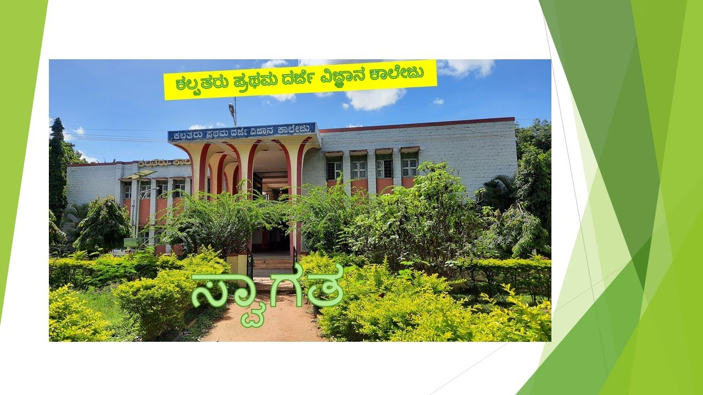

|  |
The Kalpataru Vidya Samsthe(R), Tiptur was established in the year 1962, with a cherished desire of catering to the needs of the learners of learning in and around Tiptur. It is the product of the Vision and dynamism of its founding Principal Shri. J. R. Mahalingaiah and the altruistic and munificent donations from the renowned Philanthropists like Shri. Pallagatti Adavappa the founding President of the Kalpataru Vidya Samsthe. |